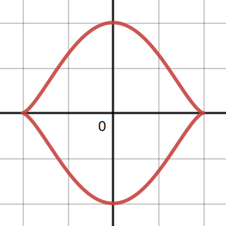

% Differentials d[something]/d[something]
\gdef\diff#1#2{\frac{\mathrm{d}#1}{\mathrm{d}#2}}
% Shortcut for dy/dx
\gdef\dydx{\diff{y}{x}}
% Differential letter "d" with a thin space before it
\gdef\dd{\mathop{}\!\mathrm{d}}
% Shortcut for not implies
\gdef\nimplies{\;\;\;\not\nobreak\!\!\!\!\implies\;}
% Shortcuts for extended brackets
\gdef\({\left(} \gdef\){\right)}
\gdef\[{\left[} \gdef\]{\right]}
% Shortcut for real number symbol
\gdef\R{\mathbb{R}}
% More spacing between lines in arrays (override by using \[5em])
\gdef\arraystretch{2.2em}
Mos Kullathon
1(a) Find d y d x \frac{\dd y}{\dd x} d x d y d 2 y d x 2 \frac{\dd^2y}{\dd x^2} d x 2 d 2 y
x = sec t ⟹ d x d t = sec t tan t y = tan t ⟹ d y d t = sec 2 t ∴ d y d x = sec 2 t sec t tan t = sec t tan t = 1 cos t cos t sin t = 1 sin t = csc t ⟹ d 2 y d x 2 = d d t csc t sec t tan t = − cos t sin 2 t sec t tan t = − cos 2 t sin 2 t tan t = − cot 3 t x = \sec t \implies \frac{\dd x}{\dd t} = \sec t\tan t \\
y = \tan t \implies \frac{\dd y}{\dd t} = \sec^2 t \\
\therefore\frac{\dd y}{\dd x}
= \frac{\sec^2t}{\sec t\tan t}
=\frac{\sec t}{\tan t}
=\frac{1}{\cos t}\frac{\cos t}{\sin t}
=\frac{1}{\sin t}
=\csc t \\
\implies\frac{\dd^2y}{\dd x^2}
=\frac{\frac{\dd}{\dd t}\csc t}{\sec t\tan t}
=-\frac{\cos t}{\sin^2 t\sec t\tan t}
=-\frac{\cos^2 t}{\sin^2 t\tan t}
=-\cot^3 t x = sec t ⟹ d t d x = sec t tan t y = tan t ⟹ d t d y = sec 2 t ∴ d x d y = sec t tan t sec 2 t = tan t sec t = cos t 1 sin t cos t = sin t 1 = csc t ⟹ d x 2 d 2 y = sec t tan t d t d csc t = − sin 2 t sec t tan t cos t = − sin 2 t tan t cos 2 t = − cot 3 t
x = 2 t 2 ⟹ d x d t = 4 t y = t 4 ⟹ d y d t = 4 t 3 ∴ d y d x = 4 t 3 4 t = t 2 ⟹ d 2 y d x 2 = d d t t 2 4 t = 2 t 4 t = 1 2 x = 2t^2 \implies \frac{\dd x}{\dd t} = 4t \\
y = t^4 \implies \frac{\dd y}{\dd t} = 4t^3 \\
\therefore \frac{\dd y}{\dd x} = \frac{4t^3}{4t} = t^2 \\
\implies\frac{\dd^2 y}{\dd x^2}
=\frac{\frac{\dd}{\dd t}t^2}{4t}
=\frac{2t}{4t} = \frac{1}{2} x = 2 t 2 ⟹ d t d x = 4 t y = t 4 ⟹ d t d y = 4 t 3 ∴ d x d y = 4 t 4 t 3 = t 2 ⟹ d x 2 d 2 y = 4 t d t d t 2 = 4 t 2 t = 2 1
t = π 4 ⟹ d y d x = csc π 4 = 2 ⟹ x = sec π 4 = 2 ⟹ y = tan π 4 = 1 \begin{align*}
t=\frac{\pi}{4}
&\implies
\frac{\dd y}{\dd x} = \csc\frac{\pi}{4} = \sqrt{2} \\
&\implies
x=\sec\frac{\pi}{4} = \sqrt{2}\\
&\implies
y= \tan\frac{\pi}{4} = 1
\end{align*} t = 4 π ⟹ d x d y = csc 4 π = 2 ⟹ x = sec 4 π = 2 ⟹ y = tan 4 π = 1
Then, the equation of the tangent line to the curve at t = π 4 \displaystyle t=\frac{\pi}{4} t = 4 π y − 1 = 2 ( x − 2 ) y = 2 x − 1. y-1 = \sqrt{2}(x-\sqrt{2}) \\
y = \sqrt{2}x - 1. y − 1 = 2 ( x − 2 ) y = 2 x − 1.
x = t 3 ⟹ d x d t = 3 t 2 y = 3 t 2 2 ⟹ d y d t = 3 t x=t^3 \implies \frac{\dd x}{\dd t} = 3t^2 \\
y = \frac{3t^2}{2} \implies \frac{\dd y}{\dd t} = 3t x = t 3 ⟹ d t d x = 3 t 2 y = 2 3 t 2 ⟹ d t d y = 3 t
The arc length L L L 0 ≤ t ≤ 3 0\le t\le\sqrt{3} 0 ≤ t ≤ 3 L = ∫ 0 3 ( 3 t 2 ) 2 + ( 3 t ) 2 d t = ∫ 0 3 9 t 4 + 9 t 2 d t = ∫ 0 3 9 t 2 ( t 2 + 1 ) d t = 3 ∫ 0 3 t t 2 + 1 d t u = t 2 + 1 ⟹ d u = 2 t d t ⟺ d t = d u 2 t t = 0 ⟹ u = 0 2 + 1 = 1 t = 3 ⟹ u = 3 2 + 1 = 4 L = 3 ∫ 0 3 t t 2 + 1 d t = 3 ∫ 1 4 t u d u 2 t = 3 2 ∫ 1 4 u d u = 3 2 [ 2 u 3 / 2 3 ] 1 4 = 3 2 ( 16 3 − 2 3 ) = 14 2 = 7. \begin{align*}
L &= \int_0^{\sqrt{3}}\sqrt{(3t^2)^2+(3t)^2} \dd t \\
&= \int_0^{\sqrt{3}}\sqrt{9t^4+9t^2} \dd t \\
&= \int_0^{\sqrt{3}}\sqrt{9t^2(t^2+1)} \dd t \\
&= 3\int_0^{\sqrt{3}}t\sqrt{t^2+1}\dd t
\end{align*}
\\
\begin{darray}{cc}
u = t^2+1 &\implies& \dd u = 2t\dd t \\
&\iff& \dd t = \frac{\dd u}{2t} \\
t = 0 &\implies& u = 0^2+1=1 \\
t = \sqrt{3} &\implies& u = \sqrt{3}^2 + 1 = 4
\end{darray}
\\
\begin{align*}
L = 3\int_0^{\sqrt{3}}t\sqrt{t^2+1}\dd t
&= 3\int_1^4 t\sqrt{u} \frac{\dd u}{2t} \\
&= \frac{3}{2}\int_1^4 \sqrt{u}\dd u \\
&= \frac{3}{2} \[\frac{2u^{3/2}}{3}\]_1^4 \\
&= \frac{3}{2} \(\frac{16}{3}-\frac{2}{3}\) \\
&= \frac{14}{2} \\
&= 7.
\end{align*} L = ∫ 0 3 ( 3 t 2 ) 2 + ( 3 t ) 2 d t = ∫ 0 3 9 t 4 + 9 t 2 d t = ∫ 0 3 9 t 2 ( t 2 + 1 ) d t = 3 ∫ 0 3 t t 2 + 1 d t u = t 2 + 1 t = 0 t = 3 ⟹ ⟺ ⟹ ⟹ d u = 2 t d t d t = 2 t d u u = 0 2 + 1 = 1 u = 3 2 + 1 = 4 L = 3 ∫ 0 3 t t 2 + 1 d t = 3 ∫ 1 4 t u 2 t d u = 2 3 ∫ 1 4 u d u = 2 3 [ 3 2 u 3/2 ] 1 4 = 2 3 ( 3 16 − 3 2 ) = 2 14 = 7.

x ( t ) = cos t ⟹ x ′ ( t ) = − sin t y ( t ) = sin 3 t ⟹ y ′ ( t ) = 3 sin 2 t cos t \begin{darray}{cc}
x(t) = \cos t&\implies& x'(t)=-\sin t \\
y(t)=\sin^3 t &\implies& y'(t)=3\sin^2 t\cos t
\end{darray} x ( t ) = cos t y ( t ) = sin 3 t ⟹ ⟹ x ′ ( t ) = − sin t y ′ ( t ) = 3 sin 2 t cos t
For t ∈ [ − π , π ] t\in[-\pi,\pi] t ∈ [ − π , π ] y ( t ) = sin 3 t = − 1 ⟹ t = − π 2 y ( t ) = sin 3 t = 1 ⟹ t = π 2 . y(t)=\sin^3t=-1 \implies t=-\frac{\pi}{2} \\
y(t)=\sin^3t = 1\implies t=\frac{\pi}{2}. y ( t ) = sin 3 t = − 1 ⟹ t = − 2 π y ( t ) = sin 3 t = 1 ⟹ t = 2 π .
The graph for the curve x ( t ) = cos t , y ( t ) = sin 3 t x(t)=\cos t, y(t)=\sin^3t x ( t ) = cos t , y ( t ) = sin 3 t − π 2 ≤ t ≤ π 2 \displaystyle-\frac{\pi}{2}\le t\le\frac{\pi}{2} − 2 π ≤ t ≤ 2 π
Integrating with respect to y y y − π 2 \displaystyle-\frac{\pi}{2} − 2 π π 2 \displaystyle\frac{\pi}{2} 2 π
Since the curve is symmetrical about the y-axis, the total area bounded by the curve is double the resulting area.
2 ∫ − π 2 π 2 x d y = 2 ∫ − π 2 π 2 x ( t ) y ′ ( t ) d t = 2 ∫ − π 2 π 2 cos t ( 3 sin 2 t cos t ) d t = 2 ⋅ 3 π 8 = 3 π 4 \begin{align*}
2\int_{-\frac{\pi}{2}}^\frac{\pi}{2} x \dd y
&= 2\int_{-\frac{\pi}{2}}^\frac{\pi}{2} x(t)y'(t)\dd t \\
&= 2\int_{-\frac{\pi}{2}}^\frac{\pi}{2} \cos t (3\sin^2 t\cos t) \dd t \\
&= 2\cdot\frac{3\pi}{8} \\
&= \frac{3\pi}{4}
\end{align*}
\\ 2 ∫ − 2 π 2 π x d y = 2 ∫ − 2 π 2 π x ( t ) y ′ ( t ) d t = 2 ∫ − 2 π 2 π cos t ( 3 sin 2 t cos t ) d t = 2 ⋅ 8 3 π = 4 3 π
(c) Find the volume of solid of revolution by revloving the curve along the y-axis.
L = ∫ 0 π 2 x ′ ( t ) 2 + y ′ ( t ) 2 d t = ∫ 0 π 2 sin 2 t + 9 sin 4 t cos 2 t d t = ∫ 0 π 2 sin 2 t ( 1 + 9 sin 2 t cos 2 t ) d t \begin{align*}
L &= \int_0^\frac{\pi}{2} \sqrt{x'(t)^2+y'(t)^2}\dd t \\
&= \int_0^\frac{\pi}{2}
\sqrt{\sin^2 t + 9\sin^4 t\cos^2 t} \dd t \\
&= \int_0^\frac{\pi}{2}
\sqrt{\sin^2t(1+9\sin^2t\cos^2t)}\dd t
\end{align*} L = ∫ 0 2 π x ′ ( t ) 2 + y ′ ( t ) 2 d t = ∫ 0 2 π sin 2 t + 9 sin 4 t cos 2 t d t = ∫ 0 2 π sin 2 t ( 1 + 9 sin 2 t cos 2 t ) d t
Point is in second quadrant.
r = ( − 4 ) 2 + 4 2 = 4 2 θ = π + tan − 1 ( − 1 ) = 3 π 4 ∴ ( r , θ ) = ( 4 2 , 3 π 4 ) r = \sqrt{(-4)^2+4^2} = 4\sqrt{2} \\
\theta = \pi + \tan^{-1}(-1) = \frac{3\pi}{4} \\
\therefore (r,\theta) = \(4\sqrt{2}, \frac{3\pi}{4}\) r = ( − 4 ) 2 + 4 2 = 4 2 θ = π + tan − 1 ( − 1 ) = 4 3 π ∴ ( r , θ ) = ( 4 2 , 4 3 π )
Point is in first quadrant.
r = 3 2 + 3 2 3 2 = 6 θ = tan − 1 ( 3 3 3 ) = tan − 1 3 = π 3 ∴ ( r , θ ) = ( 6 , π 3 ) r=\sqrt{3^2+3^2\sqrt{3}^2} = 6 \\
\theta = \tan^{-1}\(\frac{3\sqrt{3}}{3}\) = \tan^{-1}\sqrt{3} = \frac{\pi}{3} \\
\therefore (r, \theta) = \(6, \frac{\pi}{3}\) r = 3 2 + 3 2 3 2 = 6 θ = tan − 1 ( 3 3 3 ) = tan − 1 3 = 3 π ∴ ( r , θ ) = ( 6 , 3 π )
Point is in fourth quadrant.
r = 3 2 + ( − 1 ) 2 = 2 θ = tan − 1 ( − 1 3 ) = − π 6 ∴ ( r , θ ) = ( 2 , − π 6 ) r = \sqrt{\sqrt{3}^2 + (-1)^2} = 2 \\
\theta = \tan^{-1}\(\frac{-1}{\sqrt{3}}\) = -\frac{\pi}{6} \\
\therefore (r,\theta) = \(2, -\frac{\pi}{6}\) r = 3 2 + ( − 1 ) 2 = 2 θ = tan − 1 ( 3 − 1 ) = − 6 π ∴ ( r , θ ) = ( 2 , − 6 π )
Point is on the x-axis.
r = ( − 6 ) 2 + 0 2 = 6 θ = π ∴ ( r , θ ) = ( 6 , π ) r = \sqrt{(-6)^2+0^2} = 6 \\
\theta =\pi \\
\therefore (r,\theta) = (6,\pi) r = ( − 6 ) 2 + 0 2 = 6 θ = π ∴ ( r , θ ) = ( 6 , π )
For r = f ( θ ) r=f(\theta) r = f ( θ ) f ( θ ) = 2 + cos ( 2 θ ) f(\theta)=2+\cos(2\theta) f ( θ ) = 2 + cos ( 2 θ )
x ( θ ) = f ( θ ) cos θ = ( 2 + cos ( 2 θ ) ) cos θ = 2 cos θ + cos ( 2 θ ) cos θ y ( θ ) = f ( θ ) sin θ = ( 2 + cos ( 2 θ ) ) sin θ = 2 sin θ + sin θ cos ( 2 θ ) . \begin{align*}
x(\theta) &= f(\theta)\cos\theta \\
&= (2+\cos(2\theta))\cos\theta \\
&= 2\cos\theta+\cos(2\theta)\cos\theta \\
y(\theta) &= f(\theta)\sin\theta \\
&= (2+\cos(2\theta))\sin\theta \\
&= 2\sin\theta + \sin\theta\cos(2\theta).
\end{align*} x ( θ ) y ( θ ) = f ( θ ) cos θ = ( 2 + cos ( 2 θ )) cos θ = 2 cos θ + cos ( 2 θ ) cos θ = f ( θ ) sin θ = ( 2 + cos ( 2 θ )) sin θ = 2 sin θ + sin θ cos ( 2 θ ) .
Then,x ′ ( θ ) = − 2 sin θ − 2 sin ( 2 θ ) cos θ − cos ( 2 θ ) sin θ y ′ ( θ ) = 2 cos θ + cos θ cos ( 2 θ ) − 2 sin θ sin ( 2 θ ) . x'(\theta) = -2\sin\theta-2\sin(2\theta)\cos\theta-\cos(2\theta)\sin\theta \\
y'(\theta) = 2\cos\theta+\cos\theta\cos(2\theta)-2\sin\theta\sin(2\theta). x ′ ( θ ) = − 2 sin θ − 2 sin ( 2 θ ) cos θ − cos ( 2 θ ) sin θ y ′ ( θ ) = 2 cos θ + cos θ cos ( 2 θ ) − 2 sin θ sin ( 2 θ ) .
As such, the slope of the tangent line at θ = π 4 \displaystyle\theta=\frac{\pi}{4} θ = 4 π d y d x = y ′ ( π 4 ) x ′ ( π 4 ) = 2 cos π 4 + cos π 4 cos ( 2 π 4 ) − 2 sin π 4 sin ( 2 π 4 ) − 2 sin π 4 − 2 sin ( 2 π 4 ) cos π 4 − cos ( 2 π 4 ) sin π 4 = 0 − 2 2 = 0. \frac{\dd y}{\dd x} = \frac{y'(\frac{\pi}{4})}{x'(\frac{\pi}{4})}
=\frac
{2\cos\frac{\pi}{4}+\cos\frac{\pi}{4}\cos(2\frac{\pi}{4})-2\sin\frac{\pi}{4}\sin(2\frac{\pi}{4})}{-2\sin\frac{\pi}{4}-2\sin(2\frac{\pi}{4})\cos\frac{\pi}{4}-\cos(2\frac{\pi}{4})\sin\frac{\pi}{4}}
=\frac{0}{-2\sqrt{2}}
=0. d x d y = x ′ ( 4 π ) y ′ ( 4 π ) = − 2 sin 4 π − 2 sin ( 2 4 π ) cos 4 π − cos ( 2 4 π ) sin 4 π 2 cos 4 π + cos 4 π cos ( 2 4 π ) − 2 sin 4 π sin ( 2 4 π ) = − 2 2 0 = 0.
A = 1 2 ∫ 0 2 π ( 2 + cos ( 2 θ ) ) 2 d θ = 1 2 ∫ 0 2 π 4 + cos 2 ( 2 θ ) + 4 cos ( 2 θ ) d θ u = 2 θ ⟹ d u = 2 d θ ⟺ d θ = 1 2 d u θ = 0 ⟹ u = 2 ( 0 ) = 0 θ = 2 π ⟹ u = 2 ( 2 π ) = 4 π 1 2 ∫ 0 2 π 4 + cos 2 ( 2 θ ) + 4 cos ( 2 θ ) d θ = 1 4 ∫ 0 4 π 4 + cos 2 ( u ) + 4 cos u d u = 1 4 ∫ 0 4 π 4 + 1 2 cos ( 2 u ) + 1 2 + 4 cos u d u = 1 8 ∫ 0 4 π 8 + cos ( 2 u ) + 1 + 8 cos u d u = 1 8 [ 9 u + sin ( 2 u ) 2 + 8 sin u ] 0 4 π = 1 8 ( 36 π ) = 9 π 2 \begin{align*}
A &= \frac{1}{2}\int_0^{2\pi}(2+\cos(2\theta))^2\dd\theta \\
&= \frac{1}{2}\int_0^{2\pi}
4 + \cos^2(2\theta)+4\cos(2\theta) \dd\theta
\end{align*}
\\
\begin{darray}{cc}
u = 2\theta &\implies& \dd u =2\dd\theta \\
&\iff& \dd\theta = \frac{1}{2}\dd u \\
\theta = 0 &\implies& u=2(0)=0 \\
\theta = 2\pi &\implies& u = 2(2\pi) = 4\pi
\end{darray}
\\
\begin{align*}
\frac{1}{2}\int_0^{2\pi}
4 + \cos^2(2\theta)+4\cos(2\theta) \dd\theta
&= \frac{1}{4}\int_0^{4\pi}
4+\cos^2(u)+4\cos u\dd u \\
&= \frac{1}{4}\int_0^{4\pi}
4+\frac{1}{2}\cos(2u)+\frac{1}{2}+4\cos u\dd u \\
&= \frac{1}{8}\int_0^{4\pi}
8+\cos(2u)+1+8\cos u\dd u \\
&=\frac{1}{8}\[9u +\frac{\sin(2u)}{2}+8\sin u\]_0^{4\pi} \\
&= \frac{1}{8}(36\pi) \\
&= \frac{9\pi}{2}
\end{align*} A = 2 1 ∫ 0 2 π ( 2 + cos ( 2 θ ) ) 2 d θ = 2 1 ∫ 0 2 π 4 + cos 2 ( 2 θ ) + 4 cos ( 2 θ ) d θ u = 2 θ θ = 0 θ = 2 π ⟹ ⟺ ⟹ ⟹ d u = 2 d θ d θ = 2 1 d u u = 2 ( 0 ) = 0 u = 2 ( 2 π ) = 4 π 2 1 ∫ 0 2 π 4 + cos 2 ( 2 θ ) + 4 cos ( 2 θ ) d θ = 4 1 ∫ 0 4 π 4 + cos 2 ( u ) + 4 cos u d u = 4 1 ∫ 0 4 π 4 + 2 1 cos ( 2 u ) + 2 1 + 4 cos u d u = 8 1 ∫ 0 4 π 8 + cos ( 2 u ) + 1 + 8 cos u d u = 8 1 [ 9 u + 2 sin ( 2 u ) + 8 sin u ] 0 4 π = 8 1 ( 36 π ) = 2 9 π
For r = f ( θ ) r=f(\theta) r = f ( θ ) f ( θ ) = θ 2 f(\theta)=\theta^2 f ( θ ) = θ 2
x ( θ ) = f ( θ ) cos θ = θ 2 cos θ y ( θ ) = f ( θ ) sin θ = θ 2 sin θ . x(\theta) = f(\theta)\cos\theta = \theta^2\cos\theta \\
y(\theta) = f(\theta)\sin\theta = \theta^2\sin\theta. x ( θ ) = f ( θ ) cos θ = θ 2 cos θ y ( θ ) = f ( θ ) sin θ = θ 2 sin θ .
Then,x ′ ( θ ) = 2 θ cos θ − θ 2 sin θ y ′ ( θ ) = 2 θ sin θ + θ 2 cos θ . x'(\theta) = 2\theta\cos\theta-\theta^2\sin\theta \\
y'(\theta) = 2\theta\sin\theta+\theta^2\cos\theta. x ′ ( θ ) = 2 θ cos θ − θ 2 sin θ y ′ ( θ ) = 2 θ sin θ + θ 2 cos θ .
As such, the slope of the tangent line at θ = 3 π 4 \displaystyle\theta=\frac{3\pi}{4} θ = 4 3 π d y d x = y ′ ( 3 π 4 ) x ′ ( 3 π 4 ) = 2 ( 3 π 4 ) sin ( 3 π 4 ) + ( 3 π 4 ) 2 cos ( 3 π 4 ) 2 ( 3 π 4 ) cos ( 3 π 4 ) − ( 3 π 4 ) 2 sin ( 3 π 4 ) = 1 − 16 8 + 3 π . \frac{\dd y}{\dd x}
= \frac{y'(\frac{3\pi}{4})}{x'(\frac{3\pi}{4})}
= \frac{2(\frac{3\pi}{4})\sin(\frac{3\pi}{4})+(\frac{3\pi}{4})^2\cos(\frac{3\pi}{4})}
{2(\frac{3\pi}{4})\cos(\frac{3\pi}{4})-(\frac{3\pi}{4})^2\sin(\frac{3\pi}{4})}
= 1-\frac{16}{8+3\pi}. d x d y = x ′ ( 4 3 π ) y ′ ( 4 3 π ) = 2 ( 4 3 π ) cos ( 4 3 π ) − ( 4 3 π ) 2 sin ( 4 3 π ) 2 ( 4 3 π ) sin ( 4 3 π ) + ( 4 3 π ) 2 cos ( 4 3 π ) = 1 − 8 + 3 π 16 .
L = ∫ 0 4 π x ′ ( θ ) 2 + y ′ ( θ ) 2 d θ = ∫ 0 4 π ( 2 θ cos θ − θ 2 sin θ ) 2 + ( 2 θ sin θ + θ 2 cos θ ) 2 d θ = ∫ 0 4 π θ 2 ( θ 2 + 4 ) d θ = ∫ 0 4 π θ θ 2 + 4 d θ u = θ 2 + 4 ⟹ d u = 2 θ d θ ⟺ d θ = d u 2 θ θ = 0 ⟹ u = 0 2 + 4 = 4 θ = 4 π ⟹ u = ( 4 π ) 2 + 4 = 4 + 16 π 2 ∴ L = ∫ 0 4 π θ θ 2 + 4 d θ = ∫ 4 4 + 16 π 2 θ u d u 2 θ = 1 2 ∫ 4 4 + 16 π 2 u d u = 1 2 [ 2 u 3 / 2 3 ] 4 4 + 16 π 2 = 8 3 ( ( 1 − 4 π 2 ) 3 / 2 − 1 ) \begin{align*}
L &= \int_0^{4\pi}
\sqrt{x'(\theta)^2+y'(\theta)^2} \dd\theta \\
&= \int_0^{4\pi}
\sqrt{(2\theta\cos\theta-\theta^2\sin\theta)^2+(2\theta\sin\theta+\theta^2\cos\theta)^2} \dd\theta \\
&= \int_0^{4\pi}
\sqrt{\theta^2(\theta^2+4)}\dd\theta \\
&= \int_0^{4\pi}\theta\sqrt{\theta^2+4}\dd\theta
\end{align*}
\\
\begin{darray}{ccl}
u = \theta^2+4 &\implies& \dd u =2\theta\dd\theta \\
&\iff& \dd\theta = \frac{\dd u}{2\theta} \\
\theta = 0 &\implies& u=0^2+4=4 \\
\theta = 4\pi &\implies& u = (4\pi)^2+4=4+16\pi^2
\end{darray}
\\
\begin{align*}
\therefore L=
\int_0^{4\pi}\theta\sqrt{\theta^2+4}\dd\theta
&= \int_4^{4+16\pi^2}\theta\sqrt{u}\frac{\dd u}{2\theta} \\
&= \frac{1}{2}\int_4^{4+16\pi^2}\sqrt{u}\dd u \\
&= \frac{1}{2}\[\frac{2u^{3/2}}{3}\]_4^{4+16\pi^2} \\
&= \frac{8}{3}((1-4\pi^2)^{3/2}-1)
\end{align*} L = ∫ 0 4 π x ′ ( θ ) 2 + y ′ ( θ ) 2 d θ = ∫ 0 4 π ( 2 θ cos θ − θ 2 sin θ ) 2 + ( 2 θ sin θ + θ 2 cos θ ) 2 d θ = ∫ 0 4 π θ 2 ( θ 2 + 4 ) d θ = ∫ 0 4 π θ θ 2 + 4 d θ u = θ 2 + 4 θ = 0 θ = 4 π ⟹ ⟺ ⟹ ⟹ d u = 2 θ d θ d θ = 2 θ d u u = 0 2 + 4 = 4 u = ( 4 π ) 2 + 4 = 4 + 16 π 2 ∴ L = ∫ 0 4 π θ θ 2 + 4 d θ = ∫ 4 4 + 16 π 2 θ u 2 θ d u = 2 1 ∫ 4 4 + 16 π 2 u d u = 2 1 [ 3 2 u 3/2 ] 4 4 + 16 π 2 = 3 8 (( 1 − 4 π 2 ) 3/2 − 1 )